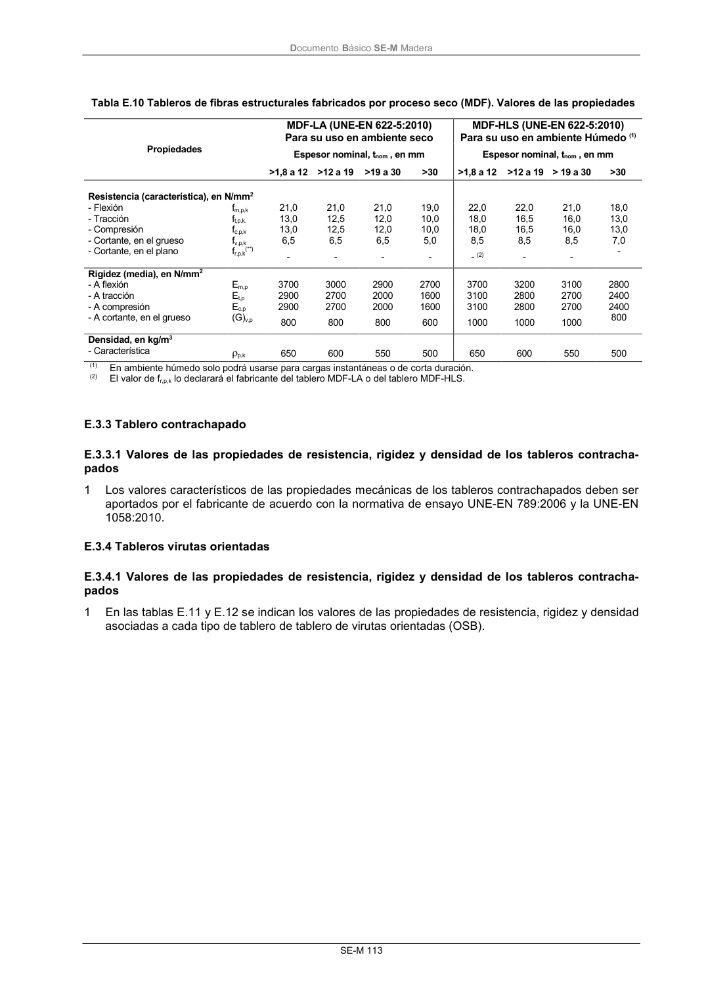

DB-SE-M Madera · edición 2019-12-20 · capa oficial
Documento DB-SE-M-oficial · SHA-256 del PDF 26b5819839ebfda78b0b119c5e76a0a37773b0d763c05688541870075df93718
Copia fiel del PDF fuente · Fuente oficial
Ficha de la disposición en la fuente oficial
Formatos: JSON del segmento · Markdown
MDF-HLS (UNE-EN 622-5:2010) Para su uso en ambiente Húmedo (1) Para su uso en ambiente Húmedo (1) Espesor nominal, tnom , en mm Espesor nominal, tnom , en mm >1,8 a 12 >12 a 19 >19 a 30 >30 >1,8 a 12 >12 a 19 > 19 a 30 >30 Resistencia (característica), en N/mm2 - Flexión fm,p,k 21,0 21,0 21,0 19,0 22,0 22,0 21,0 18,0 - Tracción ft,p,k. 13,0 12,5 12,0 10,0 18,0 16,5 16,0 13,0 - Compresión fc,p,k 13,0 12,5 12,0 10,0 18,0 16,5 16,0 13,0 - Cortante, en el grueso fv,p,k 6,5 6,5 6,5 5,0 8,5 8,5 8,5 7,0 - Cortante, en el plano fr,p,k(**) - - - - - (2) - - - Rigidez (media), en N/mm2 - A flexión Em,p 3700 3000 2900 2700 3700 3200 3100 2800 - A tracción Et,p 2900 2700 2000 1600 3100 2800 2700 2400 - A compresión Ec,p 2900 2700 2000 1600 3100 2800 2700 2400 - A cortante, en el grueso (G)v,p 800 800 800 600 1000 1000 1000 800 Densidad, en kg/m3 - Característica p,k 650 600 550 500 650 600 550 500 (1) En ambiente húmedo solo podrá usarse para cargas instantáneas o de corta duración. (2) El valor de fr,p,k lo declarará el fabricante del tablero MDF-LA o del tablero MDF-HLS.
